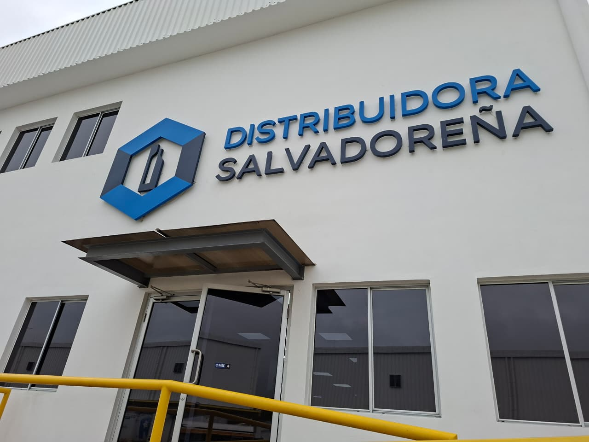
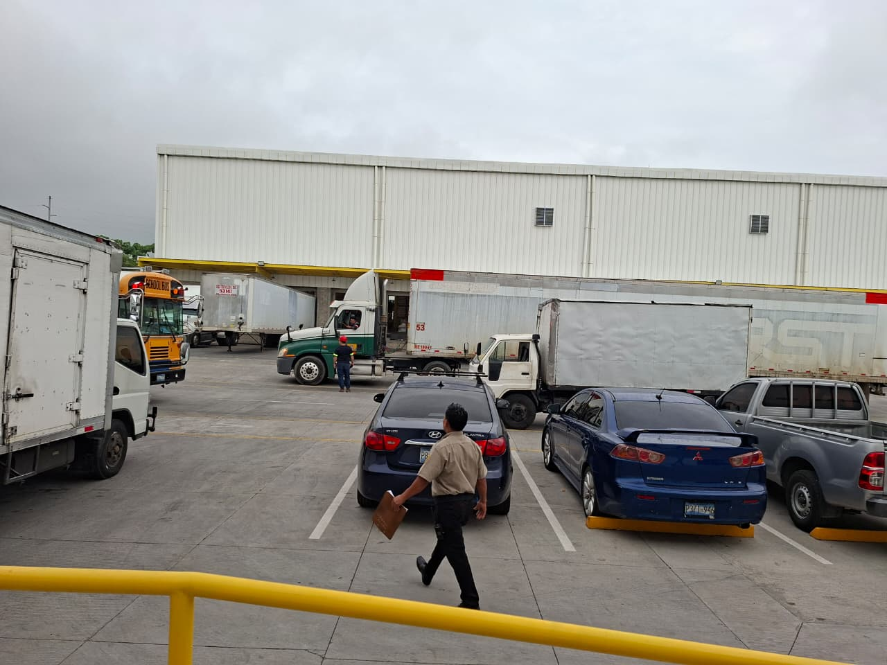
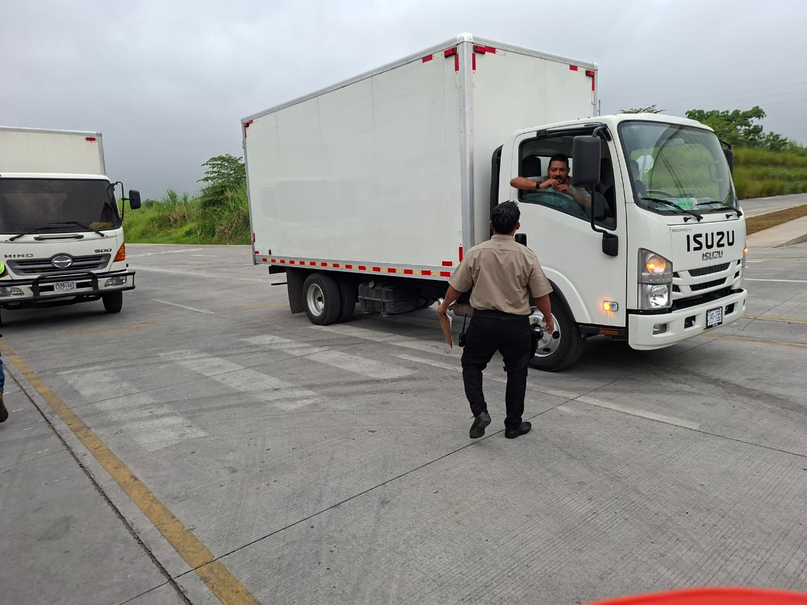
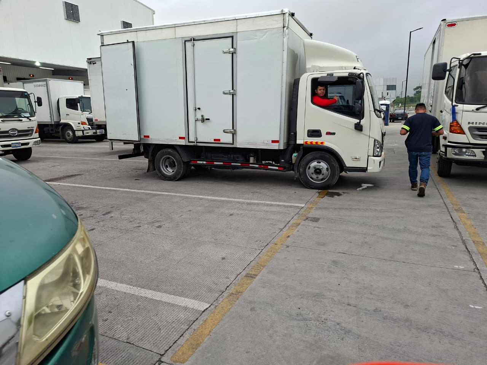
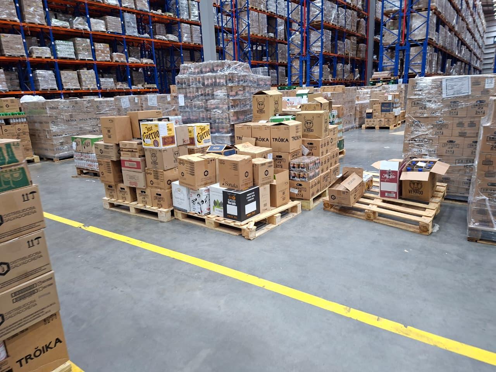
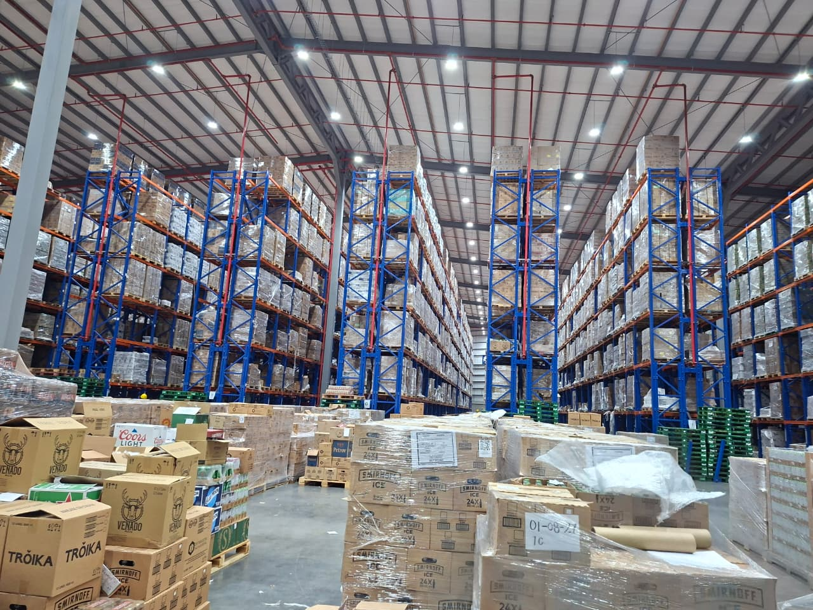
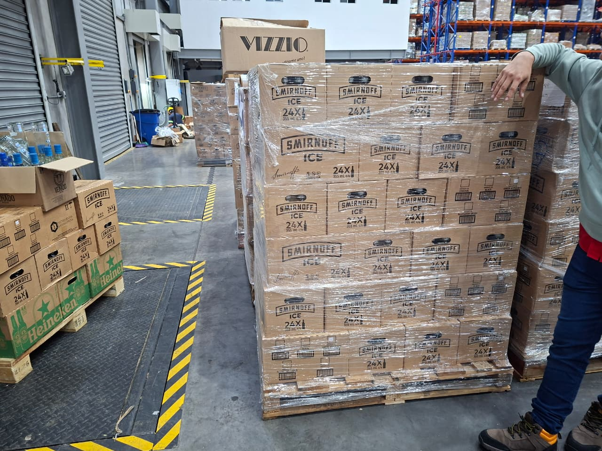
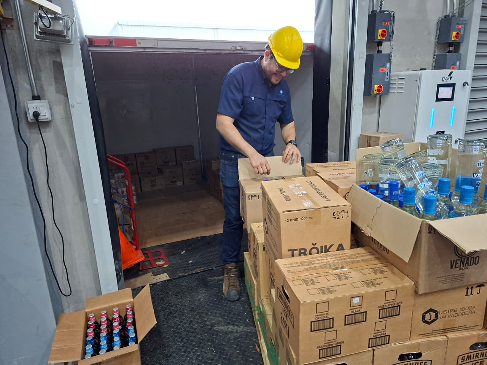
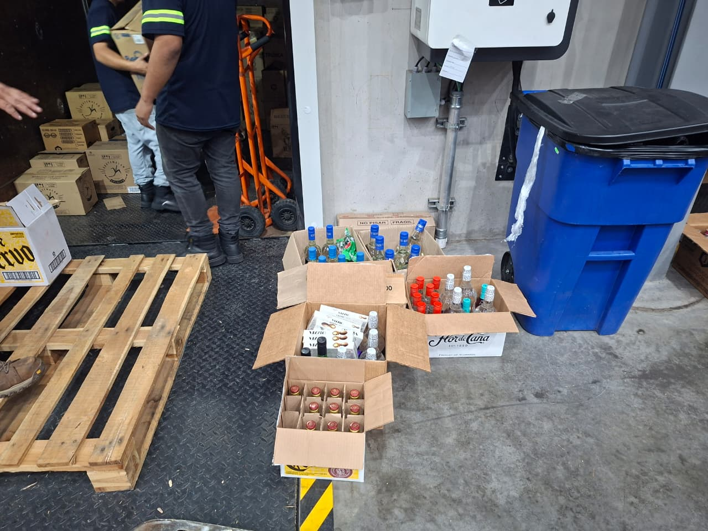

Inicio
Nombre de la Actividad: Discusión 2
Organización: DISAL (Distribuidora Salvadoreña)
Tema: Sistema Abierto: DISAL
Integrantes:
- Oscar Raúl Donis Henríquez
- Luis Ernesto Arteaga Rivas
- Jennifer Guadalupe Zelaya Zelaya
Asignatura: TSI
Fecha: 11/10/2026
Organización
Descripción: Empresa líder en distribución de bebidas alcohólicas en El Salvador, con el más amplio portafolio en marcas y categorías en este rubro.
Actividad principal: Importación, comercialización y distribución de bebidas alcohólicas
Productos / Servicios: Amplia gama de productos, como bebidas destiladas, vinos, cervezas, premezclados y abarrotes
Usuarios / Clientes: Supermercados, comercios mayoristas y minoristas
Ubicación: Final Av. San Martín 4-7, Santa Tecla
Sistema Abierto en DISAL
Entradas del Sistema (Inputs)
Portafolio y Productos
Smirnoff, Tröika, Venado, José Cuervo, Flor de Caña, Heineken y bebidas locales.
Insumos Operativos
Tarimas de madera, pallets y cajas de empaque.
Recurso Humano
Operadores con EPP, inspectores de patio, montacarguistas y auditores de inocuidad.
Equipos e Info
Rampas niveladoras, camiones, racks verticales y órdenes ERP.
Procesos de Transformación
PASO 01 Recepción: Descarga en bahías con rampas niveladoras.
PASO 02 Inspección: Control de inocuidad y sello ISO 9001/22000.
PASO 03 Almacenamiento: Ubicación por lotes en racks verticale.
PASO 04 Picking Fino: Fraccionamiento y armado de cajas surtidas.
PASO 05 Paletizado: Embalaje y aseguramiento con film plástico.
PASO 06 Despacho: Carga en furgones y firma de guía de ruta.
Salidas del Sistema (Outputs)
Productos Consolidados
Tarimas embaladas y entregadas a Súper Selectos, hoteles, restaurantes y abarroterías a nivel nacional.
Registros y Facturación
Guías de remisión firmadas, facturación electrónica legal, comprobantes y reportes ERP.
Impacto Social y RSE
Generación de empleos directos y campañas de consumo responsable ("Pospone y Disfrutarás").
Entorno
Factores del Entorno
- Regulatorio: MINSAL (Registros) y Hacienda (Impuestos/IVA).
- Mercado Global: Casas licoreras, Consumidores (DrinkIt) e infraestructura local.
- Leyes locales: Regulaciones de tránsito y horarios de carga.
Retroalimentación
Factores del Entorno
- Indicadores OTIF (On Time In Full): Medición del nivel de cumplimiento en tiempo y forma en rutas de entrega
- Inspección Físico-Patio: Registro de mermas y roturas en desembarque para ajuste de inventario.
- Auditorías Continuas ISO: Evaluación periódica de procesos bajo la norma ISO 9001 e ISO 22000.
Análisis Aplicado
DISAL (Distribuidora Salvadoreña) opera como un sistema abierto, ya que mantiene una interacción constante con su entorno, intercambiando recursos, información y servicios, y adaptándose a los cambios del mercado y a las regulaciones vigentes para garantizar la eficiencia de sus operaciones logísticas.
- Entradas: Recibe recursos provenientes del entorno, tales como productos suministrados por casas licoreras, insumos logísticos, recursos tecnológicos, información comercial y talento humano.
- Proceso de Transformación: Gestiona y transforma estos recursos mediante actividades como recepción de mercancías, almacenamiento, control de inventarios, preparación de pedidos (picking) y despacho de productos, siguiendo procedimientos operativos establecidos.
- Salidas: Distribuye productos a supermercados, hoteles, restaurantes y otros clientes, generando además documentación comercial y facturación correspondiente.
- Adaptación al Entorno: Ajusta continuamente sus operaciones para responder a cambios en las regulaciones sanitarias, normativas tributarias, exigencias de los clientes y condiciones de la cadena de suministro.
- Retroalimentación: Evalúa su desempeño mediante indicadores de gestión, niveles de servicio, control de inventarios, cumplimiento de entregas (OTIF) y auditorías internas, lo que permite identificar oportunidades de mejora y corregir desviaciones.
Evidencias
Fotografía del Diagrama Manual:
Fotografía propia / Otras evidencias:









Conclusiones
El modelo de sistema abierto demuestra cómo la integración de controles ISO, retroalimentación continua y adaptabilidad al entorno consolidan a DISAL como referente logístico..